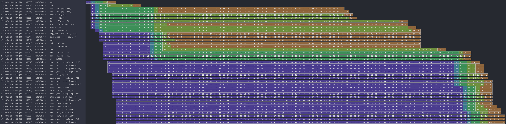

Reproducing Spectre Attack with gem5, How To Do It Right?
Table of Contents
1 Introduction
Welcome to the additional web page from the "Reproducing Spectre Attack with gem5, How To Do It Right?" paper published at EuroSec'21 by Pierre Ayoub and Clémentine Maurice. The "Simulating Transient Execution Attacks with gem5" master thesis is also an interesting document concerning the background knowledge which is extensively described, while the results mentioned in this document are obsolete.
This page will guide you through the reproduction of the experiments, the usage of our implementations and through the demonstration of some techniques discussed in the paper.
This web page is part of a GitHub repository.
2 HowTo
In this section, we will guide through step-by-step in the usage of our implementations. You can jump from one HowTo to another to see what it is about, but to make things work, you will have to follow them in the order below (note that shell variables are shared across sections). Let's start!
2.1 How to Setup the Native ARM System
To reproduce this work, you will need:
- An ARM board. We used a Raspberry Pi v4 Model B Rev 1.1 embedding a ARM Cortex-A72 (ARMv8-A) processor implemented in a SoC Broadcom BCM2711.
- A 64-bit operating system (kernel and userland) for ARM. We used Kali
Linux (stable v2020.2a, with a Linux kernel v4.19.118-Re4son-v8l+ and a
GCC compiler v9.3) because:
- It is a full 64-bit operating system supporting ARM,
- The kernel is nearly the same as the one provided by gem5,
- The kernel sources and headers are available with
apt(for developing kernel modules, if you do so).
Install the Kali Linux distribution. At the time of the study, the image was
hosted on the official website and available through direct
download. Unfortunately, you'll now have to either download the last version
on the official website, download the same version as we used through a
torrent (unofficiel) or compile it yourself. Here, we assume that you
download the image through the torrent and place the .xz file in the
/tmp directory:
cd /tmp zip="kali-linux-2020.2a-rpi3-nexmon-64.img.xz" img="kali-linux-2020.2a-rpi3-nexmon-64.img" xzcat "$zip" > "$img" rm -f "$zip"
Then, insert your SD card in your computer, and make sure that device block
name is correct (find it with lsblk and umount it if it has been
automatically mounted). Bit-copy the image on the SD card:
sdcard=/dev/sdX # Replace the X with your block device letter. sudo dd bs=4M if="$img" of="$sdcard" status=progress conv=fsync
Now, plug the SD card in the Raspberry Pi, plug an Ethernet cable and plug
the power cable in it. Then, find the IP address associated to it and
connect with the kali login and kali password:
ip="192.168.1.1" # Find the correct IP with nmap or your router interface. ssh kali@$ip # We used the following software: sudo apt-get update && sudo apt-get upgrade sudo apt-get -y install linux-cpupower git
You can log in the root account by issuing the command sudo su root if
needed.
You are now ready to compile and reproduce Spectre on the Raspberry Pi.
2.2 How to Perform the Spectre Attack
We assume that you are on the ARM system described in Section 2.1 or an equivalent one.
First, clone the repository:
git clone https://github.com/pierreay/reproduce-spectre-gem5 # We will use this variable to designate the repository through the hole file. reproduce_repo="$(pwd)"/reproduce-spectre-gem5 cd "$reproduce_repo"
Simply use the Makefile to compile our implementation, described in
Section 3.1:
cd spectre && make
Test if the binary is working by displaying a useful help message:
./spectre --help
Usage: spectre [OPTION...]
Spectre -- A Spectre implementation useful for research
-c, --cache_threshold=NUMBER Cache threshold separating hit and miss
(default: automatically computed)
-l, --loops=NUMBER Number of loops (training and attack) per attempts
(default: 30)
-m, --meta=NUMBER Number of meta-repetition of Spectre (default: 1)
-q, -s, --quiet, --silent Don't produce the header for csv
-t, --tries=NUMBER Number of attempts to guess a secret byte
(default: 999)
-v, --verbose Produce verbose output
-?, --help Give this help list
--usage Give a short usage message
-V, --version Print program version
Mandatory or optional arguments to long options are also mandatory or optional
for any corresponding short options.
Report bugs to <pierre.ayoub@irisa.fr>.
And test the attack with the default parameters like this:
./spectre
If it works correctly, you surely want to generate the metrics as we do in
the paper and customize some parameters. The metrics will be generated in a
csv format, you can then redirect them to a file. To do so, we use this
loop to repeat the hole experiment. We first launch one experiment, and
relaunch the others with the -q flag to suppress header line:
# Parameters. runs=50 # Number of runs - 1. m=10 # Number of meta repetition in the binary itself. t=999 # Number of attempts to guess one byte. l=100 # Number of loop per attempt. # Runs. ./spectre/spectre -m $m -l $l -t $t for (( i = 1; i < $runs; i++ )) do ./spectre/spectre -q -m $m -l $l -t $t done
Optional. If you want to obtain the perf_event metrics under a gem5
simulation, you will have to recompile the Spectre binary with a patch. To
do that, use git-apply to apply the patch, save the previously compiled
binary with another name and relaunch make:
# Apply the patch cd "$reproduce_repo" git apply spectre/perf.c.patch # Save the previous binary cd spectre mv spectre spectre_native # Compile the new Spectre make
2.3 How to Setup gem5 for a Full-System Simulation
To reproduce this work, you will need:
- A working gem5 installation. We used gem5 v20.0.
- An operating system image and a kernel image ready-to-use with gem5. We used the 64-bit Linaro Minimal v7.4.0 (based on Ubuntu) and the ARM64 Linux kernel v4.18.0 images provided by gem5's developers.
Note that this gem5 version and the images are now obsolete. You can of course follow our steps, but then for a new research, it would be better to use the latest gem5 version and images with the new recommended methods (e.g., Docker container).
First, install the recommended packages:
sudo apt install build-essential git m4 scons zlib1g zlib1g-dev \ libprotobuf-dev protobuf-compiler libprotoc-dev libgoogle-perftools-dev \ python3-dev python3-six python libboost-all-dev pkg-config
Clone the gem5 repository:
git clone https://gem5.googlesource.com/public/gem5 # We will use this variable to designate the gem5 repository through the hole # file. gem5_repo="$(pwd)"/gem5 cd "$gem5_repo"
Checkout the commit for version 20.0:
git checkout v20.0.0.0
Optional. If you want to obtain the perf_event metrics under a gem5
simulation, you will have to apply a patch from our repository to the gem5
source code to enable perf_event on the gem5 side (note that it should not
be required on the latest gem5 version). To do that, use:
git apply "$reproduce_repo"/gem5/perf_event.patch
And finally, compile it in optimized mode (opt), for the ARM architecture
(ARM), with 8 cores and for Python 3. It can take several hours:
mode="opt" arch="ARM" cores=8 py_version=3 scons PYTHON_CONFIG=python$py_version-config build/$arch/gem5.$mode -j $cores
If everything is working, you should be able to display the help of our simulation script:
build/ARM/gem5.opt -q "$reproduce_repo"/gem5/RPIv4.py --help
usage: RPIv4.py [-h] [-v] [--num-cores NUM_CORES] [--se] [--fs]
[--fs-kernel FS_KERNEL] [--fs-disk-image FS_DISK_IMAGE]
[--fs-workload-image FS_WORKLOAD_IMAGE]
[--fs-restore FS_RESTORE]
[se-command [se-command ...]]
Raspberry Pi 4 Model B Rev. 1.1 - Syscall emulation & Full-system simulation
Script based on a real Raspberry Pi system. It is shipped with a "reproduced"
ARM Cortex-A72 CPU. The intended use is security research. It can be used both
in system-call emulation or full-system simulation. For the full-system
simulation mode only, first boot your system and create a checkpoint where the
used CPU will be the atomic one. Only then, restore you system from your
checkpoint, where the CPU used will be the detailed one. When passing
filenames in arguments of the script, please be sure that your M5_PATH
environment variable is set accordingly.
positional arguments:
se-command Command(s) to run (multiples commands are assigned to
a dedicated core)
optional arguments:
-h, --help show this help message and exit
-v, --verbose Print detailed information of what is done
--num-cores NUM_CORES
Number of CPU cores (default = 1)
--se Enable system-call emulation (must provide 'command'
positional arguments)
--fs Enable full-system emulation (must provide '--fs-
kernel' and '--fs-disk-image' options)
--fs-kernel FS_KERNEL
Filename of the Linux kernel to use in full-system
emulation (searched under '$M5_PATH/binaries'
directory)
--fs-disk-image FS_DISK_IMAGE
Filename of the disk image containing the system to
instantiate in full-system emulation
--fs-workload-image FS_WORKLOAD_IMAGE
Filename of the disk image containing the workload to
mount in full-system emulation
--fs-restore FS_RESTORE
Path to a folder created by "m5 checkpoint" command to
use for restoration
Otherwise, check the docs/gem5_errors.html file to see if the compilation
error has already been encountered.
You will also need to compile m5term, a tool using sockets to connect
to the gem5 system (telnet could also be used instead, but this one is
more appreciate):
cd util/term
make
Let's create the images you need to perform a full-system simulation. First, you have to download the operating system and the kernel images that you will use over our simulated hardware:
cd "$gem5_repo" img_dir=img mkdir $img_dir && cd $img_dir # OS wget -O - http://dist.gem5.org/dist/current/arm/disks/linaro-minimal-aarch64.img.bz2 | bunzip2 > linaro-minimal-aarch64.img # Kernel wget -O - http://dist.gem5.org/dist/current/arm/aarch-system-201901106.tar.bz2 | tar xjv
Then, you will have to create a third workload.img image that will
contain the file(s) that you want to use in your experiments. In order to
do that, first create a 100MB zero file (you can change the size with the
count parameter):
img=workload.img dd if=/dev/zero of=$img count=200K
Create a loopback device in order to access the image as a block device:
dev=$(sudo losetup -f) sudo losetup -fP $img
Create a DOS partition table and a primary partition on the entire image,
then format the new created partition with the ext4 file system:
echo "," | sudo sfdisk $dev sudo mke2fs "$dev"p1
Finally, you are done at modifying your image, detach it from the loopback device:
sudo losetup -d $dev
Now, you have a persistent file that will hold your files for the simulation. Define a function that will be used each time you need to update the image with new files (binaries, data…):
# $1: workload image name/path. # $*: list of files to copy. workload_update() { local_dev=$(sudo losetup -f) local_mnt=/mnt/workload # Get arguments. local_img="$1" shift # Create the mount folder and the loop device. sudo mkdir -p $local_mnt sudo losetup -fP "$local_img" # Mount the block device. sudo mount -o loop "$local_dev"p1 $local_mnt # Copy files/folders. sudo cp -r -f -t $local_mnt $* # List the files to confirm. ls -alh $local_mnt # Unmount the image and freed the loop device. sudo umount $local_mnt sudo losetup -d $local_dev }
We will use this function later. All your 3 images will be mounted directly in the simulated system by gem5 itself, and the files in the workload image will be accessible in read/write. This is an efficient and handy way to communicate with a gem5 simulation.
2.4 How to Simulate Spectre with gem5
We assume that you are able to compile and know how to perform a Spectre attack with our binary (at least in theory), described in Section 2.2.
We assume that your gem5 setup is ready to perform a full-system simulation, described in Section 2.3.
Boot. The first step is to boot the system once, which can take up to one entire hour. You will launch the simulation of our system, described in Section 3.2, with gem5. Call gem5 with our Python script describing our system, declare 4 cores and the images for the full-system simulation with this command:
cd "$reproduce_repo"/gem5 "$gem5_repo"/build/ARM/gem5.opt -q -d 01boot \ ./RPIv4.py -v --num-cores=4 --fs \ --fs-kernel="$gem5_repo"/"$img_dir"/binaries/vmlinux.arm64 \ --fs-disk-image="$gem5_repo"/"$img_dir"/linaro-minimal-aarch64.img \ --fs-workload-image="$gem5_repo"/"$img_dir"/"$img"
On another shell, launch the following command to connect to your simulation
with m5term:
"$gem5_repo"/util/term/m5term localhost 3456
You must now see the boot process of the simulated system. Wait for the boot process to finish until you get a prompt, and then, issue the following command:
m5 checkpoint
This will create a snapshot of the running system just after the boot
process in the 01boot/cpt.{ticknumber} folder. Now, you will be able to
restore the snapshot in a matter of second each time you want to simulate an
experiment, there is no need to wait for the boot process anymore (except if
you modify some parameters of the system in the Python files).
You can terminate your simulation. Press C-d to disconnect from the
terminal, and use the following command to kill gem5:
pkill gem5
Spectre. This time, you will be able to simulate the Spectre attack in a
full-system simulation. First, copy the Spectre binary on the workload.img
image. Use our predefined function (Section 2.3) for that:
cd "$reproduce_repo" workload_update "$gem5_repo"/"$img_dir"/"$img" spectre/spectre
You know have a ready workload.img image with the Spectre binary
inside. The last step is to relaunch the simulation from the previous
checkpoint:
"$gem5_repo"/build/ARM/gem5.opt -q -d 02restore \ ./RPIv4.py -v --num-cores=4 --fs \ --fs-kernel="$gem5_repo"/"$img_dir"/binaries/vmlinux.arm64 \ --fs-disk-image="$gem5_repo"/"$img_dir"/linaro-minimal-aarch64.img \ --fs-workload-image="$gem5_repo"/"$img_dir"/"$img" \ --fs-restore=01boot/cpt.*
On another shell, you can connect to the restored simulation and wait reaching the prompt (a matter of seconds or 1-2 minutes):
"$gem5_repo"/util/term/m5term localhost 3456
Inside the m5term session, you can issue these two commands to access to
the Spectre binary:
mkdir -p workload # /dev/vdb1 correspond to the image given with the --fs-workload option. mount /dev/vdb1 ./workload
And finally launch the Spectre attack inside the simulated system:
cd workload ./spectre -m 10 -l 100 -t 999
To extract your result from the simulation, you can either redirect them in
a file on the mounted workload.img image, or copy-paste the terminal.
When the Spectre attack will finish, you can terminate your
simulation. Press C-d to disconnect from the terminal, and use the
following command to kill gem5:
pkill gem5
2.5 How to Visualize the Pipeline of a gem5 Processor with Konata
Konata is an external program allowing to see graphically the instructions executed in the pipeline of a simulated processor. We suggest to the reader to read this guide before using it. The first thing to do is to download the pre-compiled binary from its official repository:
mkdir konata && cd konata konata_dir=$(pwd)/konata-linux-x64 wget -O - 'https://github.com/shioyadan/Konata/releases/download/v0.34/konata-linux-x64.tar.gz' | tar -xz
In order to visualize the pipeline, you'll have to:
- Find which part of the simulation you want to see (otherwise the generated data will be too large),
- Run this part of the simulation with specific flags,
- Open the generated data in Konata.
Firstly, to determine which portion of the simulation you want to see with
Konata, you'll have to run the simulation once without any special flag and
stop it (with C-c) at the time where the interesting part is starting. For
example, in our experiment, the interesting part is the core of the Spectre
attack. A possibility is to put a printf in your code just before this
part and stop the simulation when you see the output text.
When stopping the simulation, you will see a message like this one:
Exiting @ tick 3266927000 because user interrupt received
Here, 3266927000 is the number of tick we want to start the monitoring of
executed instruction. We will refer to it as $ticknumber.
Then, you'll have to run a simulation with the --debug-flags=O3PipeView
--debug-file=pipeview.txt flags passed to the gem5 binary and the
--debug-start=$ticknumber set accordingly to the previous step:
"$gem5_repo"/build/ARM/gem5.opt -q \ --debug-flags=O3PipeView --debug-file=pipeview.txt --debug-start=$ticknumber \ "$reproduce_repo"/gem5/RPIv4.py -v --se "$reproduce_repo/spectre/spectre -l 100"
When the simulation is over (or when you stopped it because it past the last
point of interest), you just have to launch the graphical interface of
Konata by issuing the "$konata_dir/konata" command, click on File and search for the
pipeview.txt file generated with gem5 in the simulation folder.
Then, you will see a lot of instructions. How to understand and find an interesting part in the visualization? There is two main methods:
- Find regular pattern and match them with the loops in the C code,
- Find the addresses of the instructions in the found patterns and match them with the instructions in the assembly code.
Demonstration. Let's visualize the pipeline during the Spectre attack. We
generated a trace of a Spectre execution with the commands above, except
that we used the implementation by the IAIK team
(pocs/spectre/PHT/sa_ip/poc_arm). We provide the needed trace in the
docs/data/konata directory of the repository, we encourage you to follow
our step-by-step guide at the same time.
Launch Konata with the $konata_dir/konata binary and open the
pipeview.txt file from the pipeview.txt.tar.bz2 archive. The first thing
to do after loading the trace file is to enable Hide flushed instruction
in the Konata menu, otherwise, you won't be able to see any pattern but only
a linear stream (which is the goal of speculative execution) due to a lot of
flushed instruction. Then, un-zoom to identify patterns. Below the C code of
the main loop of the binary:
while (1) { // for every byte in the string j = (j + 1) % sizeof(DATA_SECRET); // mistrain with valid index for(int y = 0; y < 10; y++) { access_array(0); } // potential out-of-bounds access access_array(j); // only show inaccessible values (SECRET) if(j >= sizeof(DATA) - 1) { mfence(); // avoid speculation // Recover data from covert channel cache_decode_pretty(leaked, j); } }
In the picture below, you can see one main loop iteration of the attack which iterate over each byte to guess. The first bold blank line, top left, is the end of the first iteration, while the second, bottom right, is the end of the second iteration.
Figure 1: One main loop iteration.
If you zoom-in on the bold line at the bottom right of the screenshot
(discussed above), you can see this: it's the end of the cache_decode_pretty() C function – the receiver part of the
covert-channel –, where there is a 100 times loop over a volatile
variable to add a delay. To deduce yourself this information, you can count
the number of iterations (when it's small enough) or look at the addresses
of the instructions (which we do not provide here) by zooming a bit more.
Figure 2: Loop over a variable to add a delay.
Now that you have identified the main patterns by knowing when an attack's
iteration begin and finish, you can try to look directly for an address, in
order to find a transient execution. Below is the code of the conditional
branch that Spectre attacks, you see on the assembly code that its address
is 0x00400e74 corresponding to the b.pl 0x400e88 instruction.
char access_array(int x) { // flushing the data which is used in the condition increases // probability of speculation size_t len = sizeof(DATA) - 1; mfence(); flush(&len); flush(&x); // ensure data is flushed at this point mfence(); // check that only accessible part (DATA) can be accessed if((float)x / (float)len < 1) { // countermeasure: add the fence here // Encode in cache cache_encode(data[x]); } }
╭ 100: sym.access_array (int64_t arg1, int64_t arg_1ch, int64_t arg_28h); │ ; arg int64_t arg_1ch @ sp+0x1c │ ; arg int64_t arg_28h @ sp+0x28 │ ; arg int64_t arg1 @ x0 │ 0x00400e2c fd7bbda9 stp x29, x30, [sp, -0x30]! ; sp=0xffffffffffffffd0 │ 0x00400e30 fd030091 mov x29, sp ; x29=0xffffffffffffffd0 │ 0x00400e34 e01f00b9 str w0, [sp + arg_1ch] ; arg1 │ 0x00400e38 a00080d2 movz x0, 0x5 ; x0=0x5 │ 0x00400e3c e01700f9 str x0, [sp + arg_28h] │ 0x00400e40 9f3b03d5 dsb ish │ 0x00400e44 e0a30091 add x0, sp, 0x28 ; x0=0xfffffffffffffff8 │ 0x00400e48 c2feff97 bl sym.flush ;[1] ; lr=0x400e4c -> 0x910073e0 ; pc=0x400950 -> 0xd50b7e20 │ 0x00400e4c e0730091 add x0, sp, 0x1c ; x0=0xffffffffffffffec │ 0x00400e50 c0feff97 bl sym.flush ;[1] ; lr=0x400e54 -> 0xd5033b9f ; pc=0x400950 -> 0xd50b7e20 │ 0x00400e54 9f3b03d5 dsb ish │ 0x00400e58 e11f40b9 ldr w1, [sp, 0x1c] ; [0x1c:4]=-1 ; 28 ; tmp=0xffffffffffffffec ; w1=0xffffffff │ 0x00400e5c e01740f9 ldr x0, [sp, 0x28] ; sym.thread_arena │ ; [0x28:4]=-1 ; tmp=0xfffffffffffffff8 ; x0=0xffffffffffffffff │ 0x00400e60 2000221e scvtf s0, w1 │ 0x00400e64 0100239e ucvtf s1, x0 │ 0x00400e68 0018211e fdiv s0, s0, s1 ; s0=0x1 │ 0x00400e6c 01102e1e fmov s1, 1 │ 0x00400e70 1020211e fcmpe s0, s1 │ ╭─< 0x00400e74 a5000054 b.pl 0x400e88 ; pc=0x400e88 -> 0xa8c37bfd ; likely │ │ 0x00400e78 200400d0 adrp x0, 0x486000 ; x0=0x486000 │ │ 0x00400e7c 00cc47f9 ldr x0, [x0, 0xf98] ; [0xf98:4]=-1 ; 3992 ; tmp=0x486f98 ; x0=0x489a08 obj.data_1 │ │ 0x00400e80 00c86138 ldrb w0, [x0, w1, sxtw] ; w0=0xff │ │ 0x00400e84 56ffff97 bl sym.cache_encode ;[2] ; lr=0x400e88 -> 0xa8c37bfd ; pc=0x400bdc -> 0x90000441 ; sym.cache_encode(0xff, 0xffffffff) │ │ ; CODE XREF from sym.access_array @ 0x400e74 │ ╰─> 0x00400e88 fd7bc3a8 ldp x29, x30, [sp], 0x30 ; x29=0xffffffffffffffff ; x30=0xffffffffffffffff ╰ 0x00400e8c c0035fd6 ret ; pc=0xffffffffffffffff
This time, you want to re-enable Hide flushed instruction from the menu,
otherwise you will not see the transient execution. To find the address,
graphically return at the beginning of the trace and zoom-in until seeing
the instructions addresses at the left. Then, press F1, type "f
0x00400e74", press Enter once to search for the address 0x00400e74 from
the beginning, and press F3 again until finding a transient execution. An
instruction has been executed transiently when it is shadowed. After hitting
F3 many dozens of time, you must see this at line 12781:

Figure 3: Bound check followed by a transient execution with the malicious index.
In Spectre's source code, we know that the function memaccess() is used inside the cache_encode() function, that means that it is used when the
malicious transient load happened. Below the source code of this function
and the corresponding assembly code:
void maccess(void *p) { volatile uint32_t value; asm volatile("LDR %0, [%1]\n\t" : "=r"(value) : "r"(p)); asm volatile("DSB ISH"); asm volatile("ISB"); }
╭ 28: sym.maccess (int64_t arg1); │ ; var int64_t var_4h @ sp+0xc │ ; arg int64_t arg1 @ x0 │ 0x00400960 ff4300d1 sub sp, sp, 0x10 │ 0x00400964 000040f9 ldr x0, [x0] │ 0x00400968 e00f00b9 str w0, [sp + var_4h] │ 0x0040096c 9f3b03d5 dsb ish │ 0x00400970 df3f03d5 isb │ 0x00400974 ff430091 add sp, sp, 0x10 ╰ 0x00400978 c0035fd6 ret
If you zoom-in a bit, you will be able to see every execution stage for each
instruction at a certain time. The first ret at address 0x40095c is the
return of the flush() C function into the
access_array() function. You can see how
long was the instruction at the searched address (with the b.pl 0x400e88 mnemonic) to be executed due to the
condition which was long to resolve, more than the others. This is
graphically represented by an instruction which takes more space on the
horizontal axis. The speculative execution happened just after it. The
transient read you are interested in is the ldr x0, [x0] at address Ox400964 (in the maccess() function), which is completed but never committed, and leak
the secret value in the micro-architectural domain. You can see that this
was the last transiently executed instruction in this block, if the bound
check would have been 10 cycles shorter, then the attack would have failed!
Figure 4: Transient execution of a read instruction with a malicious index.
If you search over all the pipeline trace, you will not see another transient execution of this load with a malicious index. That means that despite all the iterations, the branch predictor defeated the Spectre attack for the following iterations, which explains the bad results we had with this implementation. You could search for when this happened by looking at the assembly code of the main loop (C code already given here):
Figure 5: Main loop of Spectre, which iterate over every byte in the secret string (Assembly code).
Search for the address 0x004006ac of the bl sym.cache_decode_pretty instruction, from the beginning, without
Hide flushed ops enabled. At some point, you will arrive here:

Figure 6: Spectre defeated by the branch predictor.
You see the branch predictor defeating Spectre by predicting that the branch
in access_array() will not be taken, and
thus, directly executing the code after the branch at address
0x00400e88. Since it is predicted not taken while it is in reality not
taken because it's the attack, the branch predictor was not tricked by
Spectre. Then the code enter the cache_decode_pretty() function at the searched address to read the
cached letters – and the function will only find the bytes used in the
training phase, no leaked bytes.
Finally, we show here an iteration where the branch predictor is trained by Spectre, by taken the branch with a valid index.

Figure 7: Branch predictor being trained.
In summary, you were able to see the three scenarios:
- When Spectre succeed and retrieve a byte,
- When Spectre is defeated and failed – which has been helpful during our research,
- When Spectre trains the branch predictor before the attack.
Note that gem5 is able to output a large number of information from every
element of the system. For instance, during our work, we used to trace
instruction execution, which output the state of the processor along with
the executed instruction, by using the "--debug-flags=O3CPU,Exec" flag for the gem5 binary. We also used the
"$gem5_repo"/util/tracediff binary, which allows to navigate in a diff
view of the instructions executed between two simulation with different
parameters, with this command:
"$gem5_repo"/util/tracediff \ "$gem5_repo"/build/ARM/gem5.opt -q --debug-flags=Exec,-ExecSymbol \ "$gem5_repo"/configs/example/arm/starter_se.py \ "\"$reproduce_repo/spectre/spectre -l 100\"|\"$reproduce_repo/spectre/spectre -l 50\""
3 Implementations
3.1 Spectre
Our implementation lives in the spectre directory of the repository:
spectre ├── asm.c ├── asm.h ├── main.c ├── Makefile ├── perf.c ├── perf.c.patch ├── perf.h ├── spectre_pht_sa_ip.c ├── spectre_pht_sa_ip.h ├── util.c └── util.h 0 directories, 11 files
It is composed of the following modules:
asm- ARM assembly implementation. Directly inside the files, we
described in details the use of the
dsb,isbanddc civacinstructions in order to implement themfence(),ifence(),flush(),rdtsc()functions as well as an anti-speculation, a memory access function and Flush+Reload functions. main- Orchestrate all the modules. Handles the arguments, the meta-repetition of the attack, the memory allocations, and the metrics reporting.
perfperf_eventwrapper. It builds convenient functions to initializeperf_eventand read the counters on top of the Linux system calls.spectre_pht_sa_ip- Spectre implementation (for the PHT-SA-IP version). Implements the covert-channel, the training and the attack phase, as well as the simple heuristic to determine if the guess is correct.
util- Utilities functions used across the binary. Implements the argument handling, cache-hit threshold detector, gem5's related function, hamming distance and others useful functions.
The utility of the patch is discussed in Section 2.2. Its purpose
is only to comment/uncomment a few lines to switch from a working
perf_event on a native ARM system to a working perf_event on a gem5 ARM
system (this is still a TODO item in the code). Note that there is a lot of
comments into the code to explain everything, don't hesitate to look at it
to understand specific parts of the Spectre attack, the assembly
instructions, or the choices that have been made.
3.2 gem5
Our gem5 system lives in the gem5 directory of the repository:
gem5 ├── ARMv8A_Cortex_A72.py ├── perf_event.patch └── RPIv4.py 0 directories, 3 files
It is composed of the following modules:
ARMv8A_Cortex_A72- Cluster and cores classes based on the ARM Cortex A72 processor. This file defines the classes of a lot of important components, like the branch predictor, the walker cache, the L1/L2 caches, the cores and the processor itself, the pipeline configuration, and the connections between all these components. Note that modeling a processor is a very complex and long task, thus this model is surely not suitable to use for a high-fidelity performance evaluation, rather it is suitable to be used for security research.
RPIv4- System class based on a Raspberry Pi 4 Model B. This file defines the classes of the main memory, the system itself (RealView platform), tied-up every component and implements the functions that interface gem5 and the host operating system (disks, arguments, PMU). In this file, a lot of instantiation of objects that lack documentation in gem5 are explained in the comments, feel free to refer to it if you want to know how a full-system simulation works and how to implement it in a "convenient way".
The "convenient way" we talked about in the last paragraph corresponds to:
- The boot process
- The first boot is done with a simple and fast processor
model (an
AtomicSimpleCPU), which allows to boot the system in less that one hour. When a restoration is done, it is automatically detected and replace the simple and fast processor model by a detailed and slow one (a derivedO3CPU). - The workload share
- Several methods exists to share files between the host system and the gem5 system, as modifying the large operating system image or piping through the terminal. Our choice was to create a new block device on the gem5 system and to use a dedicated so-called "workload" image, allowing to use an unmodified system image, to swap them, and to be less error prone than terminal piping.
- The simulation mode
- Regarding the goal of an experiment, it can be useful to use the system-call emulation (fast) or the full-system simulation (realistic) with the same simulated hardware (system and processor models). Thus, our system support the both modes with the same Python file, unlike the majority of scripts provided with gem5.
The utility of the patch is discussed in Section 2.3. Briefly, it generates the PMU declaration in the device tree to enable communication between the Linux kernel and the gem5 PMU model. To deeply understand what the patch does and how it works, see our corresponding StackOverflow post or our ticket on the gem5 mailing list.
4 Appendices
If you are a gem5 user who experience some unresolved errors, you could check
the docs/gem5_errors.html file of the repository.